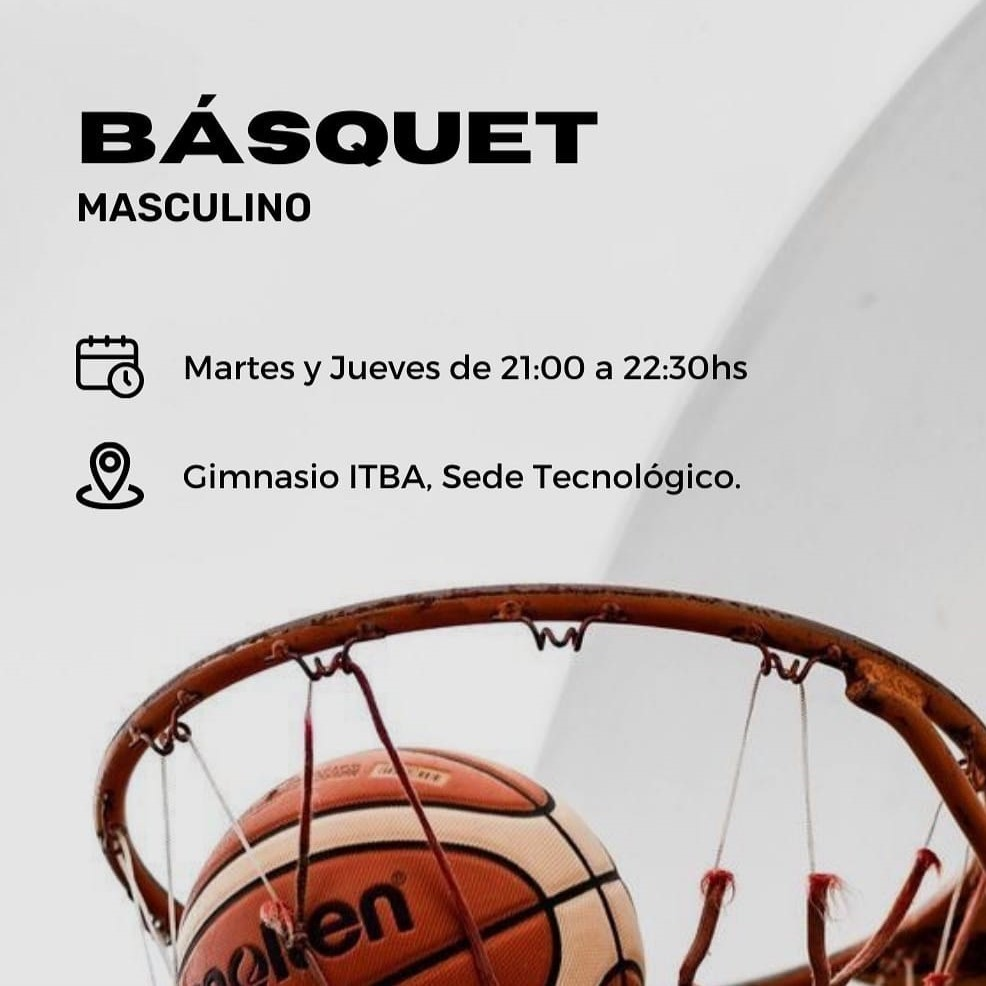
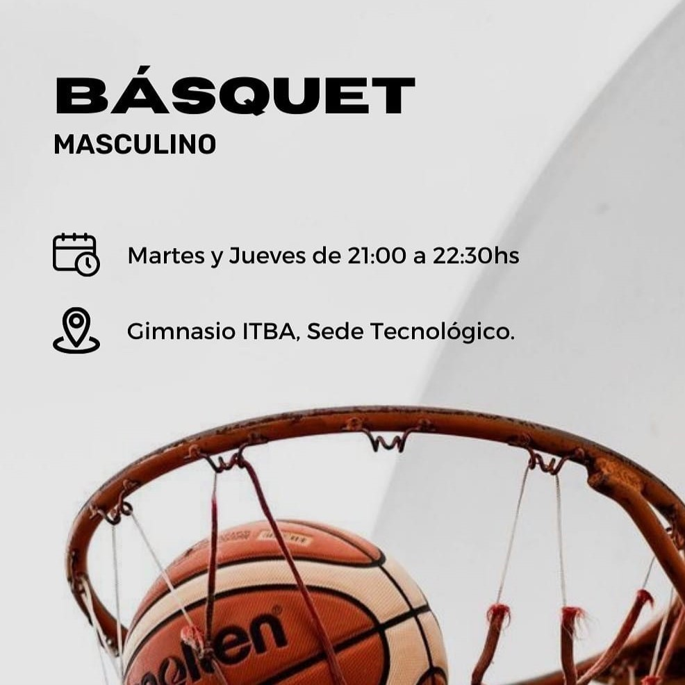
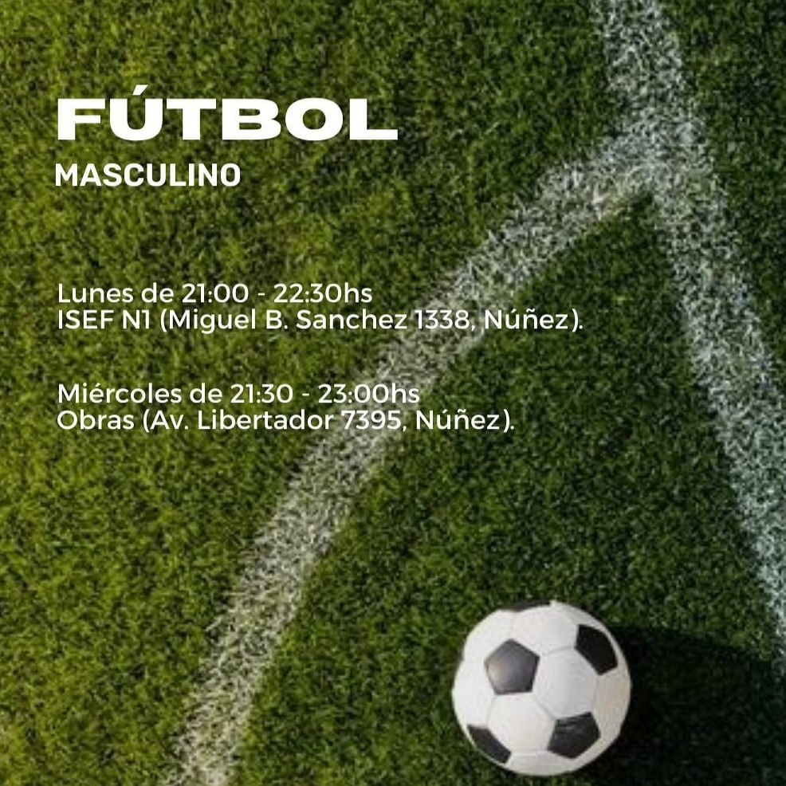
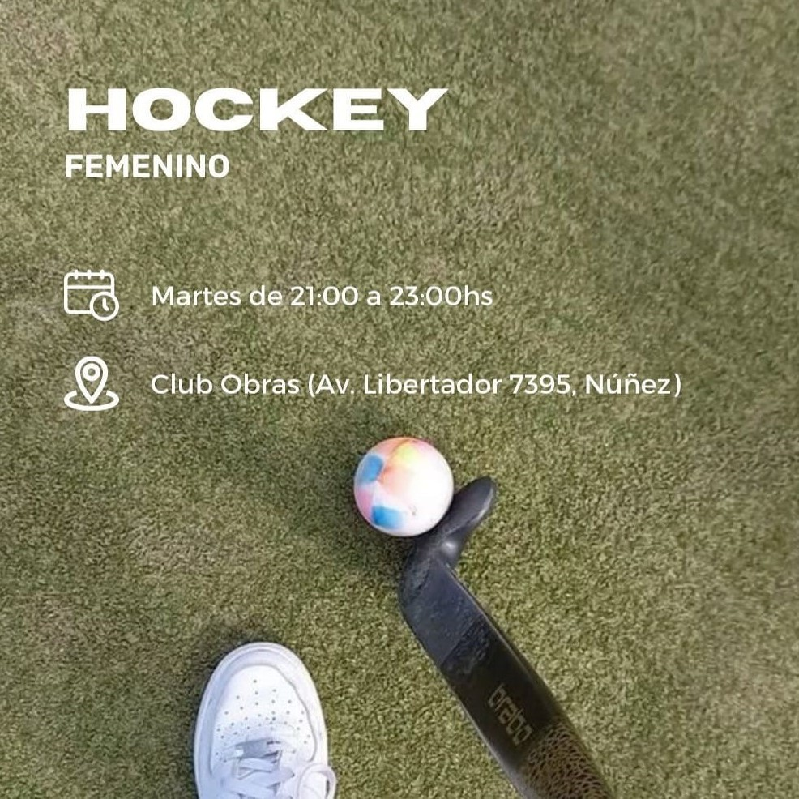
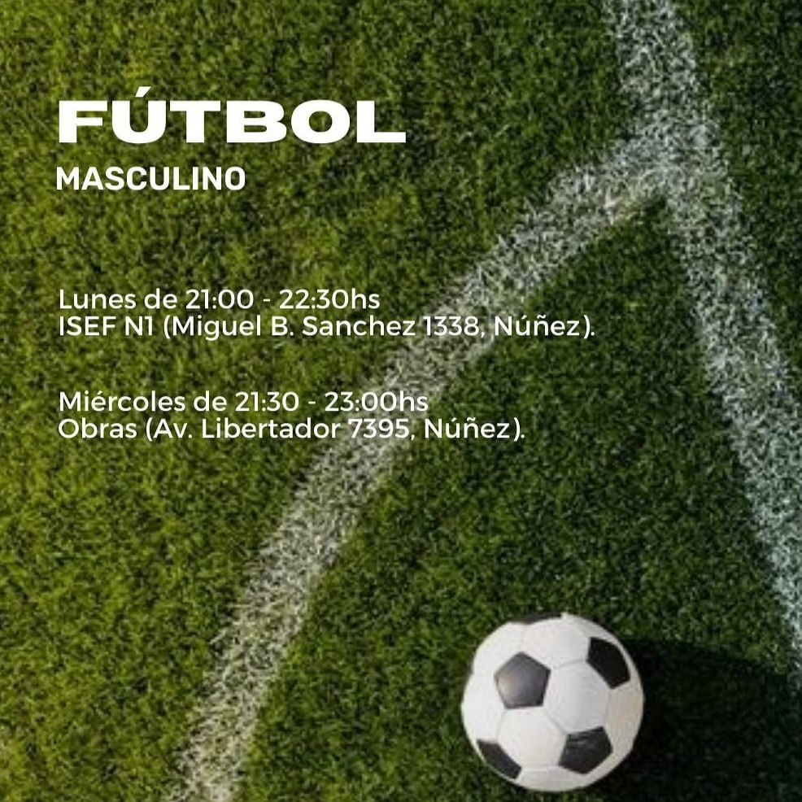
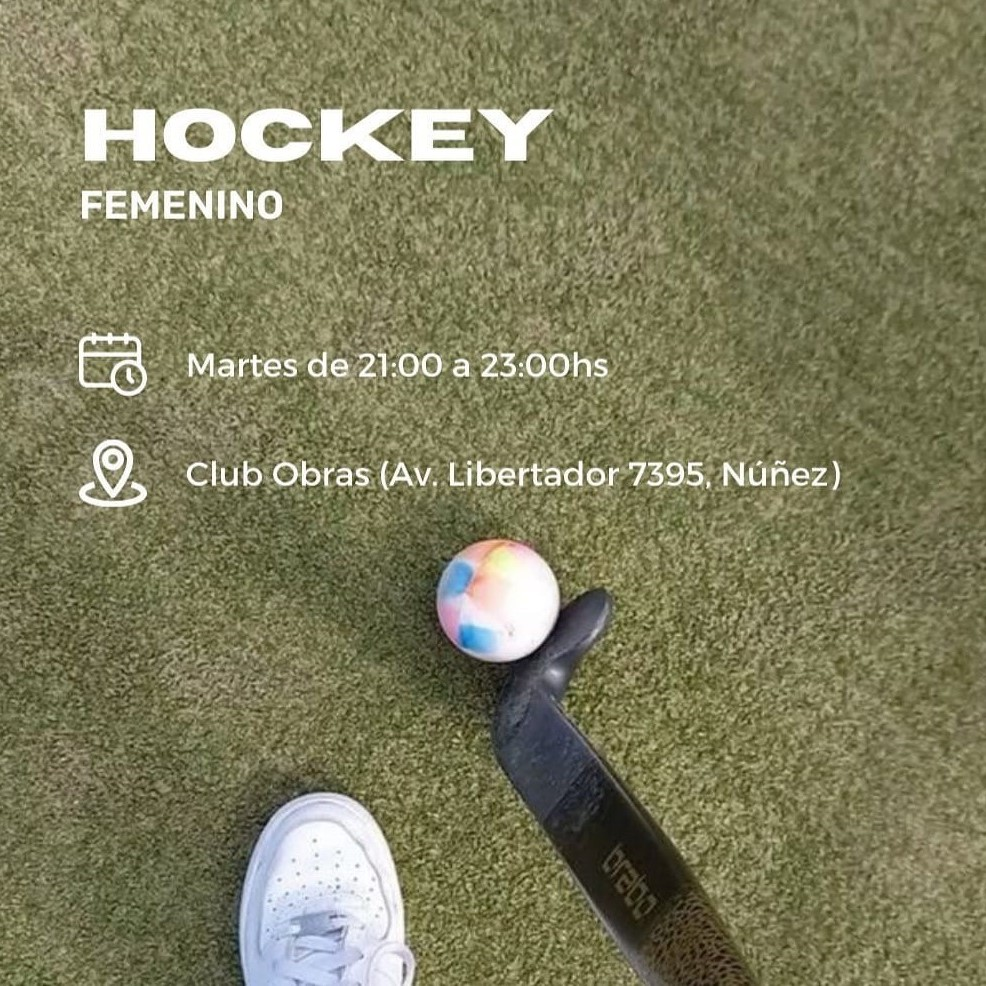

ENCARGADOS
Somos el equipo de Deportes de CEITBA. Nos encargamos de supervisar el correcto funcionamiento de los Deportes y fomentar la actividad deportiva en la comunidad estudiantil.


NUESTROS DEPORTES
 

 





PREGUNTAS FRECUENTES
¿Puedo sumarme siendo ingresante o graduado?
Si. El único requisito es ser socio de CEITBA. Si aún no lo sos, enviá un email a ceitba@itba.edu.ar bajo el asunto "Alta socio CEITBA"
¿Se requiere algún nivel previo en el deporte?
Todos los deportes se practican de forma amateur y están abiertos a todos los niveles. Aquellos que lo deseen y bajo consideración del entrenador a cargo, podrán conformar los equipos que representan a la universidad en los Torneos Interuniversitarios amateur.
¿Qué pasa si falto a algún entrenamiento?
No pasa nada siempre y cuando avisen al entrenador a cargo, entendemos que hay épocas que puede complicarse la asistencia. En particular, durante los meses de exámenes finales se suspende la actividad deportiva